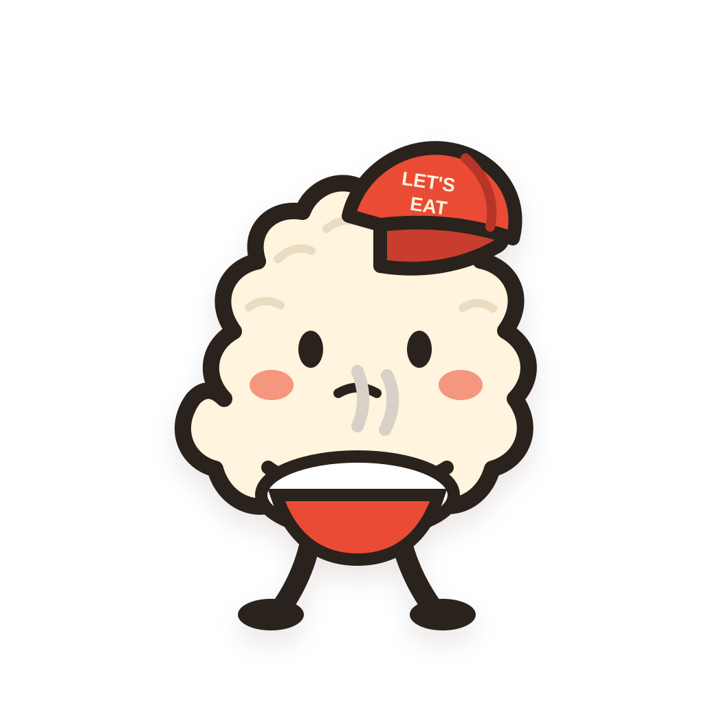
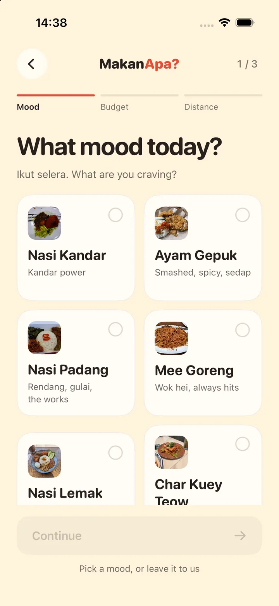
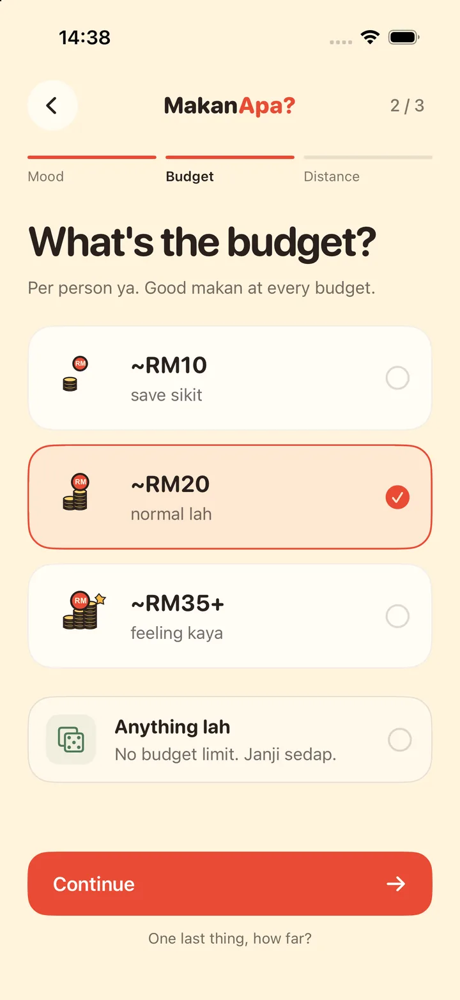
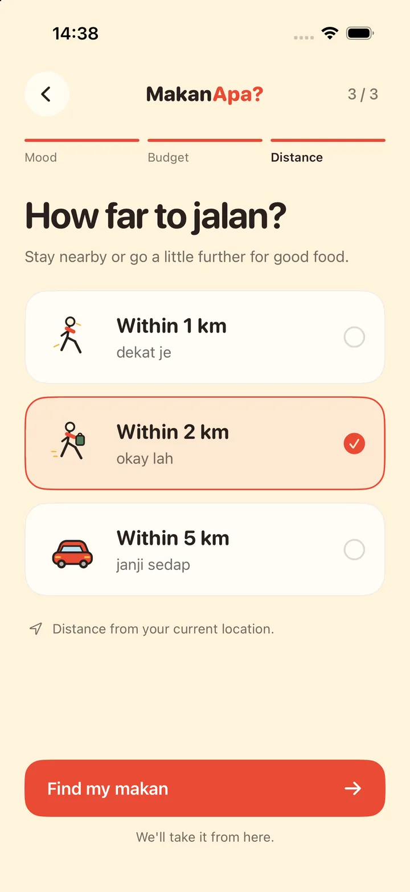
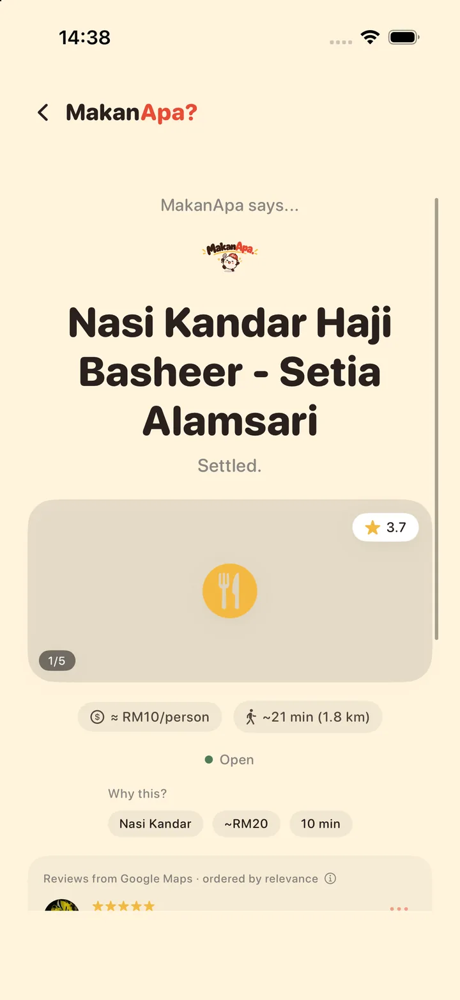

Hey, hungry human.
What toeat today?
Nasi lemak?
Mamak again?
No idea…

1 / 3 Pick your mood.
2 / 3 Good food, every budget.
3 / 3 How far will you go?
Settled.




That quick.


MakanApa?
Decided in seconds.
FREE · IPHONE
Let's eat!